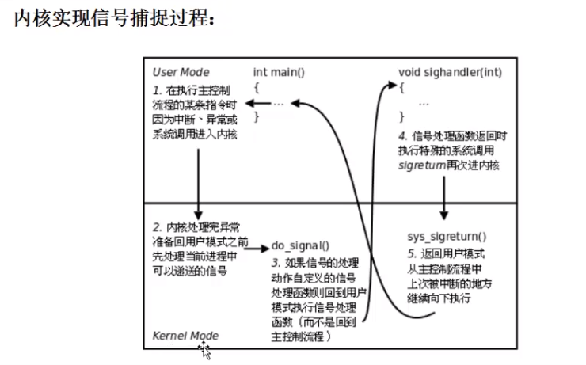
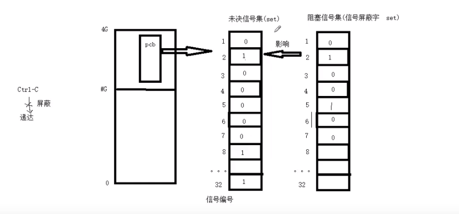

信号
概念
信号是由于进程产生，但是由内核调度传递给另一个进程： 
- 产生信号
+ 按键产生信号:
+Ctr+c --> 2)SIGINT(终止/中断)
+Ctr+z --> 20)SIGTSTOP(终端暂停)
+Ctr+\ --> 3)SIGQUIT(退出)
+ 系统调用产生:kill(2), raise, abort+ 软件条件产生: 如定时器alarm+ 硬件异常产生: + 如非法访问内存(段错误):11)SIGSEV(段错误)+ 除0:8)SIGFPE+ 命令产生：kill(1) - 递达：产生的信号递达到了接受信号进程
- 未决： + 介于产生信号和递达之间的状态，主要由于阻塞信号集导致。 + 我们可以直接操作的是堵塞信号集，来影响未决信号集。
- 信号的处理方式
+ 默认：但是每个信号的默认动作可能不一致
+ Term: 终止进程
+ Ign : 忽略信号（默认即时对该种信号忽略操作）
+ Core: 终止进程，生成Core文件(查验进程死亡原因，用于gbd调试)
+ Stop: 停止（暂停）进程
+ Cnt : 继续运行进程
+
9)SIGKILL、19)SIGSTOP不允许忽略和捕捉，只能执行默认动作。+ 忽略：对于该信号的处理动作就是忽略 + 捕捉：调用用户处理函数
signal相关函数
1.kill
#include <sys/types.h>
#include <signal.h>
int kill(pid_t pid, int sig);
- 第一个参数： + pid > 0: 发送信号给指定的进程 + pid = 0: 发送信号给与调用进程同一组的的所有进程，而且发送进程有权向他们发送信号 + pid < 0: 将信号发送对应进程组ID=|pid|，而且发送进程有权向他们发送信号 + pid =-1: 发送给这样的进程：而且发送进程有权向他们发送信号
2.raise/abort
// raise
#include <signal.h>
int raise(int sig);
// abort
#include <stdlib.h>
void abort(void);
- raise : 自己给自己发信号
- abort : 自己给自己发终止信号
3.alarm
#include <unistd.h>
unsigned int alarm(unsigned int seconds);
- 设置定时器，在指定seconds之后，不管进程处于什么状态，时间一到就发送信号。内核给当前进程发送是
14)SIGALRM信号，进程收到该信号，默认动作是终止进程。 seconds == 0时，即取消定时器- 第一次设置定时器返回值0。后面再设置定时器时，会覆盖前面的定时器，重新计数，此时返回值是前面定时器剩余的秒数。
- 每个进程有且只有一个定时器。
4.setitimer
#include <sys/time.h>
int getitimer(int which, struct itimerval *curr_value);
int setitimer(int which, const struct itimerval *new_value,
struct itimerval *old_value);
struct itimerval {
struct timeval it_interval; /* Interval for periodic timer */
struct timeval it_value; /* Time until next expiration */
};
struct timeval {
time_t tv_sec; /* seconds */
suseconds_t tv_usec; /* microseconds */
};
setitimer 相比较 alarm 提供了更加精确的定时信号控制，前者是微妙级，后者是秒级。
+ which
+ ITIMER_REAL : 等同于 alarm，自然定时，即和进行状态无关，时间到就发送SIGALRM
+ ITIMER_VIRTUAL: 计算进程占用cpu时间，发送信号SIGVTALRM
+ ITIMER_PROF : 计算进程cpu调用及执行系统调用时间，发送信号SIGPROF
+ new_value/old_value
+ 前者是需要设置的时间，后者是返回的时间。
+ setitimer 是一个周期定时，new_value设置的本次和下次定时时间。当下次定时时间为0，就仅仅定时一次。
5. singal
#include <signal.h>
typedef void (*sighandler_t)(int);
sighandler_t signal(int signum, sighandler_t handler);
通过signal函数可以自定义信号处理函数来应对信号。信号是由内核检测到，而函数signal是将信号和信号处理函数联系起来。
+ 第一个参数: signal是接受到的信号，传递给信号处理函数。
+ 第二个参数: 是信号处理函数，其格式:typedef void (*sighandler_t)(int);即返回类型是void，参数是int类型的函数，同时这个函数的接受值就是产生的信号。
6. 信号集
内核通过读取未决信号集来判断信号是否应该被处理。信号屏蔽字mask可以影响未决信号集，而信号屏蔽字需要通过数据类型sigset_t创建的对象set来设置mask，来达到屏蔽信号的目的，即影响未决信号集来决定信号是否将被处理。他们之间的关系如图:

+ mask操作函数
```c
#include
int sigemptyset(sigset_t *set); // 将信号集合清空
int sigfillset(sigset_t *set); // 将信号集全部置1
int sigaddset(sigset_t *set, int signum); // 将某个信号加入信号集
int sigdelset(sigset_t *set, int signum); // 将某个信号清出信号集
int sigismember(const sigset_t *set, int signum); // 判断某个信号是否在信号集
#define _SIGSET_NWORDS (1024 / (8 * sizeof (unsigned long int))) // 32
typedef struct {
unsigned long int __val[_SIGSET_NWORDS];
} __sigset_t;
typedef __sigset_t sigset_t;
```
`sigset_t`是一个位图，通过上述函数来操作这个位图。上面的函数成功返回0，失败返回-1。
sigprocmask用来获取或者改变调用进程的信号mask。也可屏蔽信号、解决屏蔽。 ```c #includeint sigprocmask(int how, const sigset_t *set, sigset_t *oldset);+ 第一个参数：决定了函数调用的行为 + `SIG_BLOCK`  :  进程的屏蔽信号集是这个`set`和原来的屏蔽信号笔的并(union)。 + `SIG_UNBLOCK`： 将`set`中的信号从当前信号集合中移除出去。 + `SIG_SETMASK`： 直接将`set`覆盖当前信号集 + 第二个参数：`set`即上面的`sigset_t`格式，是本次函数给阻塞信号的设定值。 + 第三个参数：返回的当前的信号屏蔽集合。 + `sigpending`c #includeint sigpending(sigset_t *set);`` 将调用进程的未决信号集存储在set`中传出。
7. sigaction
#include <signal.h>
int sigaction(int signum, const struct sigaction *act, struct sigaction *oldact);
struct sigaction {
void (*sa_handler)(int);
void (*sa_sigaction)(int, siginfo_t *, void *);
sigset_t sa_mask;
int sa_flags;
void (*sa_restorer)(void);
};
struct sigaction+sa_handler: 用来指定捕捉到信号时候的行为。SIG_DFL、SIG_IGN、信号处理函数。 +sa_sigaction: 当sa_flags = SA_SIGINFO时，sa_sigaction指定信号处理函数(之前是sa_handler指定)。 +sa_mask：指定的是在处理信号的过程中需要屏蔽的信号，即不捕捉该该信号，那么就会执行默认动作。而且触发该处理函数的信号再来时候会丢弃，即 多次信号只执行一次 ，除非sa_flags = SA_NODEFER。 +sa_flags：指定的是用于修改信号行为的标志位，默认是0，即在信号处理函数执行期间自动屏蔽本信号。这个函数的操作还是要依赖 mask的操作函数。 +sa_restorer：不要使用。- 返回值：成功是0，失败是-1.